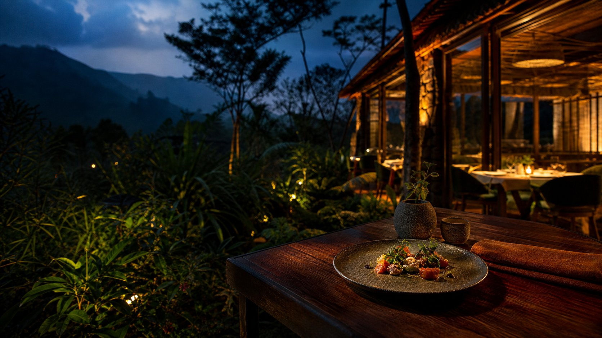

Special
food nights
Gather around something different.
↗Musanze · Rwanda EST. AT THE TABLE
A journey of sustainable ingredients, global flavours and unforgettable experiences.
The garden
Our food begins with care for ingredients, creativity and the world around us. The journey starts close to the ground, then travels far.
ROOTS → GARDEN → INGREDIENTS

From ingredient to flavour
From fresh ingredients to bold flavours, every dish has a story. Follow the good things as they move from garden to kitchen to plate.
04 · The table
Come for the flavours. Stay for the experience.
Make a little room
Traveling Roots is made for people, shared moments and experiences that stay with you.
Gather around something different.
↗Curiosity belongs in every kitchen.
↗Make the table your own.
↗A closer connection to what we eat.
↗The people
There’s a particular kind of magic in a place that makes room for everyone. Come as you are. Stay as long as you like.
“This was probably one of the best meals we've had in Africa”
— Mad or Nomad · Google review